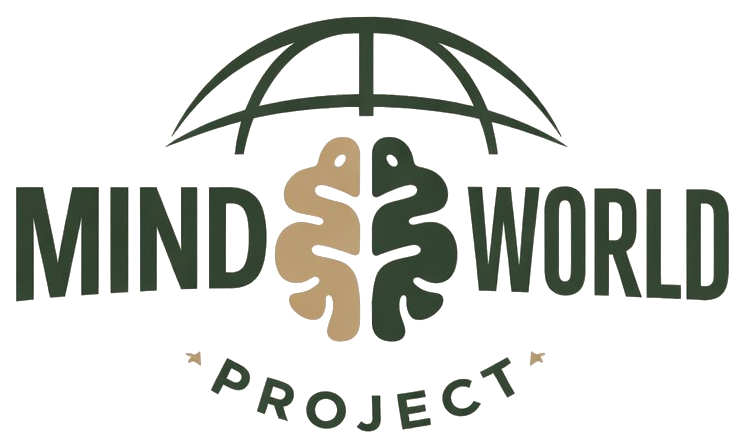

TWIM Project · Cuaderno
Dejar de necesitar que te validen para sentir que vales.
Antes de empezar
Esto no es un curso ni un manual de autoayuda. No vas a encontrar aquí «diez pasos para quererte más». Es un mapa de algo que probablemente llevas haciendo desde muy pronto, casi sin darte cuenta: buscar en la mirada del otro la señal de que estás bien.
Está pensado para leerse en orden. Primero entender el mecanismo —qué es, cómo se reconoce, de dónde viene—; después, una parte que casi nadie te cuenta; y al final, una práctica concreta para empezar a notarlo en tu día. No para apagarlo de golpe (no se puede), sino para empezar a verlo.
Esto es material educativo, no clínico. Si algo de lo que leas te sacude, es normal. Pero si te paraliza, te roba el sueño o te lleva a sitios oscuros, busca a alguien que pueda mirarlo contigo de cerca. Un cuaderno no sustituye eso.
El punto de partida
Hay personas que necesitan ser miradas para saber que están. Lo digo casi literalmente: la mirada del otro funciona como un espejo. Si te miran, existes. Si te aprueban, vales. Si se alejan, te disuelves un poco.
A eso, en consulta, lo llamo hambre de mirada.
No es necesidad de atención. La atención es ruido y caduca rápido. Hambre de mirada es algo más íntimo: la sensación de que, sin alguien mirándote y diciéndote —con palabras o sin ellas— que estás bien, te quedas en un sitio incómodo del que necesitas salir cuanto antes.
Este cuaderno va sobre eso: sobre por qué te pasa, cómo se nota, y qué empieza a cambiar cuando dejas de pelearte con ello y empiezas a verlo.
Lo que vas a recorrer
Cuaderno TWIM · primera edición · 2026. Uso personal del comprador. No se redistribuye.
Parte 01
No es amar demasiado. No es ser intensa, ni sensible, ni de las que «se enganchan rápido». Es un sistema: una manera muy concreta de regular tu sentido de quién eres usando lo que hace o dice otra persona. Y se enciende sin pedirte permiso, porque se montó cuando no había otra opción.
Funciona como un espejo. La otra persona te devuelve —o no— la señal de que estás bien, y de esa señal depende tu estado. Si te miran, existes. Si te aprueban, vales. Si se alejan, te disuelves un poco. La palabra clínica sería regulación externa —que te calmas desde fuera en vez de desde dentro—. La palabra de andar por casa es la que da título a esto: hambre de mirada.
Mira la forma que tiene, porque la vas a reconocer:
Por eso un «te quiero» dura unas horas y luego reaparece, intacta, la sensación de que necesitas otro. La confirmación de fuera calma, pero no cura. No porque la pidas mal, sino porque estás buscando dentro del otro algo que solo se construye dentro de ti.
Parte 02
Estas diez cosas se disfrazan de amor, de generosidad o de «ser buena persona». Por debajo, casi siempre, hacen lo mismo: ponen tu seguridad en manos del otro. Léelas despacio y marca, sin juzgarte, las que reconozcas en ti esta última semana.
No hay nota de corte ni diagnóstico. Esto no se cura sumando cruces. Si reconoces varias, no es que estés «peor»: es que el sistema lleva tiempo encendido y aún no lo habías mirado de frente. Eso es justo lo que empieza a cambiar las cosas: mirarlo.
Parte 03
No viene de tu carácter. No es que seas «así». Hambre de mirada se monta de niña, en un momento concreto: aquel en el que la mirada del adulto que te cuidaba era condicional. Si te portabas bien, te miraban. Si no, la mirada se iba —o se ponía dura, o triste, o se desviaba a otra parte—.
Aprendiste rápido que la mirada era un recurso escaso. Y aprendiste a hacer lo necesario para que no se fuera. Eso, repetido durante años, deja huella. La huella es que de adulta sigues buscando esa mirada por todas partes. Aunque tengas trabajo, pareja, hijos, vida montada. Mirar a mamá o a papá se convirtió en mirar a la pareja, al jefe, al grupo.
Hay un nombre clínico para la pieza que faltó: la función especular —la necesidad de que alguien te mirara con admiración genuina para que tú construyeras, desde dentro, un sentido sólido de tu propio valor (es la idea de Heinz Kohut)—. Dicho en llano: necesitabas un espejo que te devolviera «vales», y ese espejo falló o vino a ratos. No te quedó un hueco por capricho. Te quedó porque algo que tenía que estar, no estuvo.
Parte 04
Hasta aquí, la historia habitual: te falta algo y lo buscas fuera. Pero hay una vuelta de tuerca que casi nadie te explica, y es la que hace que esto no se arregle «cumpliendo más».
No es solo que te sientas en falta. Es que hay algo en ti que la mirada que buscas no aprobaría —un deseo, una rabia, una parte tuya que no encaja en el ideal de quien crees que tienes que ser para que te quieran—. Y eso es lo que de verdad escondes. Por eso, cuando alguien se aleja, la voz susurra: «fue por eso que escondo». Casi nunca es verdad. Pero lo das por hecho.
Por eso ningún logro, ninguna pareja, ningún «te quiero» apaga el hambre del todo: no estás tapando algo que te falta, estás escondiendo algo que eres. La paz no llega el día que por fin eres suficiente para esa mirada. Llega —un poco— el día que dejas de tener que esconder lo que ella condena.
Mientras tanto, la dependencia se disfraza de virtud. Cada máscara parece algo bueno y por debajo es control —un intento de que el otro no se vaya—:
La idealización tiene trampa propia: cuando el otro falla (y falla, porque es humano), saltas a lo contrario —«es un monstruo»— y luego vuelves. Ese vaivén entre «todo bueno» y «todo malo» —en psicoanálisis, la escisión: partir a la persona en dos para no tolerar que sea compleja— no es amor. Es la necesidad buscándose un sitio.
Parte 05
Nada de lo que viene es para apagar el sistema de golpe (no se puede). Es para meter un poco de espacio entre el impulso y la acción, y para empezar a verte funcionar. No son deberes. No hace falta hacerlos todos. Elige uno y pruébalo esta semana.
Cuando notes el tirón de buscar confirmación —escribir otra vez, revisar, explicarte de más—, antes de hacerlo:
No es para dejar de sentir. Es para que la acción la elijas tú, no el pánico.
Al final del día, una situación. Cinco líneas, sin adornos:
Cuando la reacción es desproporcionada al hecho, casi siempre es una necesidad antigua activándose. Ahí está el dato, no en el mensaje sin contestar.
Un límite pequeño a la semana, dicho con cuidado. La fórmula: límite + puente que muestra que el otro te importa.
«No puedo contestar ahora, pero te escribo esta noche. Sé que es importante.» El puente no es debilidad: es lo que permite que el otro lo escuche sin sentirse atacado. Cada límite cumplido es un voto silencioso: «mi necesidad también cuenta».
Cuando oigas la frase de siempre —«no eres suficiente», «se irá por tu culpa»—, no discutas con ella. Solo ponle autor: «esto es el juez, no soy yo». No se calla. Pero deja de mandar cuando sabes de quién es la voz.
Parte 06
Recapitulemos en tres frases, sin resumir de más:
Esto es el mapa y las primeras herramientas. Si quieres seguir, hay dos sitios donde el trabajo continúa, más despacio y más hondo:
El libro · «Tu valor no está en su mirada». La obra completa de la que este cuaderno es el resumen práctico: el origen, las máscaras, el ciclo y el alivio, contados con calma.
El grupo · «Volver a Mí». Si lo de aquí te ha tocado de cerca y quieres trabajarlo acompañada, hay un grupo cerrado en otoño. Puedes entrar en la lista de espera, sin pago ni compromiso.
La newsletter · «Te escribo». Cartas como esto, cada tanto, sin prisa. Si te apetece seguir leyendo, ahí estoy.
No hace falta que decidas nada hoy. Lo que has leído no se va.
— Daniel